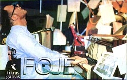

 |
tikras garsas |
Tikras garsas – Foje albumas, įrašytas 1994 rugpjūčio 23 dieną kaip akustinių koncertų serijos „Tikras garsas“ dalis. Jis buvo išleistas tik kasetės pavidalu.
Įrašo dieną Andrius Mamontovas šventė savo gimtadienį.
Daina „Vėl paliks pasaulį šiluma“ vėliau buvo išleista Andriaus Mamontovo soliniame albume Pabėgimas. „Aš bėgu gaudyti drugelių“ – linksmas, neįpareigojantis instrumentinis kūrinys – yra ankstyvoji Foje daina, ją galima išgirsti albume Mokykla.
-
Pirma pusė
- Ir nieko panašaus
- Vėjas
- Vėl paliks pasaulį šiluma
- Paskutinė diena
- Amžinas judesys
- Vandenyje
- Ir aš dar gyvensiu
- Nobody's forest
- Vieną kartą Paryžiuj
- Vaikystės stogas
- Atsimenu tai
- Liūdesys
- Aš bėgu gaudyti drugelių
Antra pusė
3, 4,8,13 – niekur anksčiau neskelbtos Foje dainos
- Andrius Mamontovas – gitara, vokalas
- Arnoldas Lukošius – fortepijonas, akordeonas
- Algimantas Kriščiūnas – mušamieji
- Darius Burokas – boso gitara
- Artūras Šidlauskas – garso režisierius (studija Tango)
- Aurelijus Silkinis – Tikro garso projekto iniciatorius
- E. Rubliauskas ir Jonas Staselis – fotografai
- Algimantas Kriščiūnas – dizaineris
IR NIEKO PANAŠAUS
skrendant kažkuriame keistam sapne
žemė liko galbūt per daug toli
svajonės ar tu tada matei mane
tai buvo vėl svaičiojimai apie tave
ir nieko nieko panašaus į šį pasaulį
ir nieko nieko kas primintų blogas mintis
ir nieko nieko panašaus į sutryptą meilę
ir nieko nieko panašaus į tavo akis
kai bėgau kai bėgau debesų takais
galbūt atitrūkau šiek tiek per daug
kaip rasti tai kas tęsiasi amžinai
tu leidai o gal ir privertei likt aukštai
VĖJAS
šalta čia kaip ir jų akyse
ir tamsu čia tarp mūsų visų
aš atsimenu saulės dienas
giedrą dangų ir meilės rankas
man koktu nuo bereikšmių veidų
man koktu nuo beprasmių kalbų
mes gyvenam lyg žaidžiam lyg ne
norim skristi bet liekam dugne
aš atsimenu dideli vėją
aš matau tą beprotišką aukštį
aš atsimenu atvirą erdvę
aš matau kaip mes skridom su paukščiais
pasakyk ar tu džiaugsmą jauti
kai gatve nežinia kur eini
kai rūkai ir be skaičiaus geri
ką tai keičia tu vėl tik žaidi
tu mane ekrane pamatai
tu žinai negirdžiu ką sakai
jeigu nori prakalbint mane
pabandyk susitikti sapne
VĖL PALIKS PASAULĮ ŠILUMA
vėl paliks pasaulį šiluma
vėl pakils su paukščiais lapai skrist
vėl bandau išsaugoti tave
vėl šaukiu tik niekas nebegrįš
pažiūrėk į atviras duris
lyg kraštų pripildytas lietaus
ten kažkas tave palikęs bėgs tolyn
ir lietus žolėj pėdas nuplaus
PASKUTINĖ DIENA
žuvys giliai kaip ir paukščiai aukštai
tai tik amžinai neatsiejami broliai
mano namai begaliniai laukai
visada šalia nepasiekiami toliai
jūros dugne sudaužytam laive
miega niekam jau nepriklausantys grobiai
mano turtai ten kur paukščių takai
niekam niekada nepasiekiami lobiai
kai tik sutems atsinešiu vandens
paskandinsiu jame savo jauną veidą
ir kai po nakties saulė vėl patekės
prisiminsiu kaip ji prieš tai nusileido
šiandien yra paskutinė diena
gaila tik džiaugsmu negaliu pasigirti
mano sode begalybė žiedų
medžiai visada taip atrodo prieš mirtį
AMŽINAS JUDESYS
mes kilsime vis aukštyn
į juodą žvaigždėtą dangų
tik paukščiai ten mus pasieks
mes klyksime jų balsais
mes mosime sparnais
tai bus mūsų stiprios rankos
mes skrisime aukštyn
kol debesys pasibaigs
aš pamenu kaip kadais
visi mes į žemę kritom
mes nebetikėjom tuo
kad kilsime vėl aukštyn
kaip bangos vandenyje
kaip rytas pakeitęs naktį
mes judam aukštyn žemyn
tai amžinas judesys
VANDENYJE
šitas keistas pasaulis verčia mane
amžinai ieškoti vilties
nesibaigiantis triukšmas
verčia mane amžinai ieškoti tylos
vandenyje
šaltam vandeny
begalinė ramybė verčia mane
amžinai ieškoti kančios
nepripildytas jausmas verčia mane
amžinai ieškoti tavęs
IR AŠ DAR GYVENSIU
aš apie tai skaičiau senoj dulkėtoj knygoj
aš apie tai girdėjau pokalbiuose žmonių
tekančiam vandeny visą tai užrašyta
virpančioj liepsnoje visą tai rast gali
kad aš dar gyvensiu daug tūkstančių metų
ir mano vienatvė gyvens amžinai
ir tu dar gyvensi daug tūkstančių metų
ir tavo vienatvė gyvens amžinai
tyliai vėl lis lietus
oras vėl bus toks grynas
nieko nesimatys atvirame lange
tavo akių tyla veidrodyje atspindėta
klausia tavęs ar mirus gimti reikės dar kart
VIENĄ KARTĄ PARYŽIUJE
tavo nekaltybė man atvėrė vėl akis į saulę
tavo nekaltybė lyg lietus išplovė užterštas mintis
tavo nekaltybė šį pasaulį man parodė vėl iš naujo
tavo nekaltybė atidarė užsitrenkusias duris
vieną kartą paryžiuj
svaičiojau apie tave
vieną kartą paryžiuj
rytui nušvitus lange
tu sugriovei viską ir po to vėl viską pastatei iš naujo
tu keistai tylėjai taip keistai kad net prakalbinai mane
tavo nekaltybė išsiliejo ir užvaldė mano kraują
tavo nekaltybė tartum šėlstanti palaima pragare
VAIKYSTĖS STOGAS
tą vakarą tamsų aš ant stogo lipau
norėjau išvysti ką seniai užmiršau
norėjau pajusti svaigų orą dangaus
nuo jo užsimerkt ir savęs paklaust
klausyk žmogau
klausyk nenusisuk
ko ieškai čia
vaikystė baigės juk
dar būdamas vaikas aš užlipdavau čia
ir kojas nukaręs svajojau nakčia
džiaugiaus kad esu taip arti prie dangaus
kad ranką prie čerpių galiu priglaust
tą vakarą tamsų aš ant stogo lipau
norėjau išvysti ką seniai užmiršau
džiaugiaus kad esu vėl čionai
vaikystė sugrįžo lyg seni sapnai
ATSIMENU TAI
atsimenu tai ko nebus jau daugiau
atsimenu koks buvo aukštas dangus
aš mėgau svajot kaip dabar tai matau
atsimenu savo vaikystės draugus
tik prisimint negaliu
ką visai pamiršau
man brangi kiekviena paauglystės diena
ir ta mergina kuri išmokė bučiuot
atsimenu ir tą kuri buvo pirma
atsimenu kaip aš pradėjau dainuot
tik prisimint negaliu
ką visai pamiršau
atsimenu miestus visus kur buvau
paryžiaus gatves ir niujorko barus
ir katedrą prahoj kur dievą radau
ir žmones visus kuriuos ten sutikau
tik prisimint negaliu
ka visai pamiršau
tik prisimint negaliu
kur aš vakar buvau
LIŪDESYS
žodžių daug įvairių išgalvojame mes
kad netektų mastyt ir liūdėt
visi norime būt maloniais ir džiugiais
nekaltais ir linksmais būtinai
tik kam visa tai
tu liūdėt nebijok
tu liūdėt nebijok
nebijok liūdėt
nes tiktai liudesy
nes tiktai liūdesy
sielos džiaugsmas
iš tų žodžių skambių
ir juokingai kvailų
mes sustatome daug sakinių
galim juoktis ilgai
nekaltai ir linksmai
kol pasibaigia tie sakiniai
tik kam visa tai
argi gali įvertinti šviesą tasai
kas nematė tikrosios tamsos
nenuvertinkim liūdesio nes tik jisai
mums parodo kas tai džiaugsmai
AŠ BĖGU GAUDYTI DRUGELIŲ
aš bėgu gaudyti drugelių